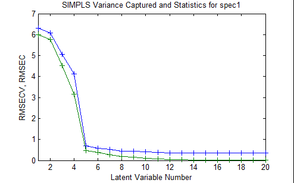

Using Cross-Validation
Background
Cross validation is a very useful tool that serves two critical functions in chemometrics:
- It enables an assessment of the optimal complexity of a model (for example, the number of PCs in a PCA or PCR model, or the number of LVs in a PLS model), and
- It allows an estimation of the performance of a model when it is applied to unknown data.
For a given data set, cross validation involves a series of experiments, hereby called sub-validation experiments, each of which involves the removal of a subset of objects from a dataset (the test set), construction of a model using the remaining objects in the dataset (the model building set), and subsequent application of the resulting model to the removed objects. This way, each sub-validation experiment involves testing a model with objects that were not used to build the model.
A typical cross-validation procedure usually involves more than one sub-validation experiment, each of which involves the selection of different subsets of samples for model building and model testing. As there are several different modeling methods in chemometrics, there are also several different cross-validation methods, and these vary with respect to how the different sample subsets are selected for these sub-validation experiments. The properties of the 5 different cross-validation methods that are available in PLS_Toolbox are discussed below, and summarized in Table 1.
For the following descriptions, n is the total number of objects in the data set, and s is the number of data splits specified for the cross-validation procedure, which must be less than n/2.
Venetian Blinds: Each test set is determined by selecting every sth object in the data set, starting at objects numbered 1 through s.
Contiguous Blocks: Each test sets is determined by selecting contiguous blocks of n/s objects in the data set, starting at object number 1.
Random Subsets: s different test sets are determined through random selection of n/s objects in the data set, such that no single object is in more than one test set. This procedure is repeated r times, where r is the number of iterations. It is the averaged results of the iterations that is used in the report of the cross validation results.
Leave-One-Out: Each single object in the data set is used as a test set.
Custom: Each of the test sets is manually defined by the user. Provisions can be made to "force" specific objects to be in every test set, never be in a test set, or not be used in the cross validation procedure at all.
Table 1. Properties of different cross-validation methods in Solo and PLS_Toolbox.
| Venetian Blinds | Contiguous Blocks | Random Subsets | Leave-One Out | Custom | |
| Test sample selection scheme |
| ||||
| Parameters |
|
|
|
|
|
| Number of sub-validation experiments |
= s |
= s |
= (s * r) |
= n |
= s |
| Number of test samples per sub-validation |
= n/s |
= n/s |
= n/s |
=1 |
|
Graphical User Interface
When using the Analysis GUI, the cross-validation settings can be accessed by clicking on the red checkmark on the corner of the Model button of the status panel; or by selecting the "Choose Cross-Validation" button on the Analysis Flowchart, or by selecting the Tools menu on the Analysis GUI, then selecting Cross-Validation. Note that a set of data must first be loaded into the Analysis interface before the cross-validation utility is made available. Once this is done, the Cross-Validation window appears.
The drop-down menu on the left is used to select the cross-validation method, and the slider bars on the right are used to specify parameters for the cross-validation method that is selected. Note that not all of the parameters are relevant for every cross-validation method. For example, if the "contiguous block" method is chosen, the user may only adjust two parameters: the Maximum Number of LVs and the Number of Data Splits (see Figure 1). The parameters that are available for each Cross-Validation method are specified in the second row of Table 1.
Figure 1. The Cross-Validation Window, with parameter selection shown for the "contiguous block" method.
When the Cross-Validation window in Analysis GUI is first opened, the parameters specified in the slider bars default to values that are based on the dimensionality of the data.
Once the parameters have been set to desired values, select the "Apply" button to apply these settings and keep the Cross-Validation window open, or select the "OK: button to apply these settings and close the Cross-Validation Window. Pressing the "Reset" Button causes the parameters to revert to their default settings. A quick way to verify that your cross-validation settings will be applied to the next analysis is to point the mouse to the checkbox on the corner of the Model button of the Analysis Status panel. If this checkmark is red, this indicates that your most recently specified cross-validation settings will be applied to the next analysis of the loaded data.
Figure 2. Verification that Cross-Validation is selected.
Cross-Validation Results
In Analysis GUI, the cross-validation process accompanies the construction of the "full" model, which uses the complete set of loaded data. Consequently, once the Analysis is executed, cross-validation results and plots will be made available along with results and plots for the "full" model. For example, the Model Results window in Analysis will include a Root Mean Square Error of Cross-Validation (RMSECV) value along with the Root Mean Square Error of Calibration (RMSEC) value. The RMSECV is defined as

where contains the values of the Y variable that are estimated by cross-validation (where the value for each object i is estimated using a model that was built using a set of objects that does not include object i), contain the known values of the Y variable, and n is the total number of objects in the data set.


Also, selection of the "Plot Variance Captured" plot button will enable the user to plot RMSEC and RMSECV as a function of the number of latent variables retained in the model (see Figure 3). Such a plot is useful for determining the optimal number of latent variables to retain in a model that is built using the full set of data.
Figure 3. Plot of Calibration error and Cross-Validation error as a function of the number of latent variables retained in the PLS model. 
In principle, the RMSEC must always decrease as the number of latent variables retained in the model increases. However, because the RMSECV is determined from the cross-validation experiment, in which the test samples were not used to build the model that was used to test them, this value can actually increase as too many latent variables are added to the model. The optimal number of latent variables depends on the specific objectives of the modeling project, but is typically the number at which the addition of another latent variable does not greatly improve the performance of the model. In this specific case, one could choose either 5 or 8 latent variables based on this criterion. However, if the consequences of overfitting, and subsequent poor predictive model performance, are particularly high, then one could conduct several cross-validation procedures using different sets of cross-validation methods and parameters, to enable a more confident decision to be made.
An additional plot that is made available by including cross-validation in the Analysis GUI is the analog to the common "calibration curve" scatter plot of predicted versus actual Y values. In this case, of course, there are two possible sources of "predicted" Y values: 1) Y values predicted by a model that uses all of the available objects in the data set (called "Y Predicted"), and 2) Y values predicted during cross-validation (called "Y CV Predicted").
Command-Line
The command line version of cross-validation is called using the function crossval. The general syntax for crossval is
results = crossval(x,y,rm,cvi,ncomp,options);
where x and y refer to the X block and Y block data (either in array or dataset object format), rm defines the regression or modeling method, cvi defines the cross-validation method, ncomp defines the maximum number of latent variables to use in cross validation, and options can be used to assign some optional parameters to the procedure. The input can be a cell array that specifies both the cross validation method and the relevant parameters for that method. For example, cross-validation of the nir_data data set using the PLS modeling method (with the SIMPLS algorithm), and the contiguous block cross-validation method with 5 data splits and a maximum of 20 latent variables (as was specified in the GUI example discussed above, see Figure 2) would be done using the command:
results = crossval(spec1,conc(:,1),'sim',{'con' 5},20);
The output of the command-line cross-validation routine is then stored in a structured array called results, which contains the following sub-arrays:
press: [5x20 double]
cumpress: [1x20 double]
rmsecv: [1x20 double]
rmsec: [1x20 double]
cvpred: [30x1x20 double]
cvbias: [1x20 double]
classerrc: []
classerrcv: []
misclassed: {}
reg: []
Details regarding the syntax and output of crossval can be obtained by typing help crossval at the Matlab prompt.
Custom Cross-Validation
In Solo and PLS_Toolbox, the user can also manually specify the subsets of samples to be used as tests sets in the cross-validation procedure, using the "Custom" cross-validation method. When using the GUI, if the "Custom" method in the Cross-Validation window (Figure 1) is chosen, then the user will be asked to specify a "custom cross-validation" vector that specifies the subsets of objects to be placed in each test subset for each sub-validation. This custom cross-validation vector can be a variable that is loaded or can be loaded from a class set in the DSO. This custom cross-validation vector must be a vector of integers with dimensionality 1 x n, where n is the total number of objects in the currently-loaded data set. The values within this vector must adhere to the following set of rules:
- A value of -2 indicates that the object is placed in every test set (never in a model-building set)
- A value of -1 indicates that the object is placed in every model-building set (never in a test set)
- A value of 0 indicates that the object is used for neither model-building nor model testing
- Values of 1,2,3… indicate the test set number for each object (for those objects that are used in the cross-validation procedure)
For example, for a data set containing 9 objects, a custom cross validation array of
- [-1 0 1 1 -2 2 2 0 -1]
will result in two sub-validation experiments: one using objects 3,4 and 5 in the test set and 1,6,7 and 9 in the model-building set, and one using objects 5,6 and 7 in the test set and 1,3,4 and 9 in the model-building set.
This method can be particularly useful in cases where the data sets have relatively few objects, or they are generated from a designed experiment. In such cases, it might be necessary to "force" some objects to always be either in the test set, in the model-building set, or out of the cross-validation procedure entirely, in order to avoid misleading results, as discussed below.
Choosing the Cross-Validation Method
There are many attributes that influence selection of the appropriate cross-validation scheme for a given situation. These include the following:
- The ordering of the samples in the dataset,
- The total number of objects (and variables) in the dataset
- The presence (or lack thereof) of replicate samples in the dataset
- The specific objective(s) of the analysis,
- The consequences/costs of overly optimistic or overly pessimistic results, and
- The amount of time available to do cross-validation
Also, there are two "traps" that one generally wants to avoid when selecting a cross-validation scheme:
- The ill-conditioned trap: for a given sub-validation, the selected test set and remaining model set cover different data "spaces"- thus leading to overly pessimistic cross-validation results
- The replicate sample trap: for a given sub-validation, replicates of the same physical sample are present in both the model-building set and the test set, thus leading to overly optimistic cross-validation results
With the above considerations in mind, several recommendations can be made about the appropriate cross-validation method and parameters for different generic situations. These recommendations are be made by cross-validation method below, and are summarized in Table 2, below.
Venetian Blinds
This method is simple and easy to implement, and generally safe to use if there are relatively many objects that are already in random order. For time-series data, it can be useful for estimating errors in the method from non-temporal sources, provided that a sufficient number of data splits are specified. However, for blocked data with replicates, one must choose parameters very carefully to avoid the replicate sample trap. Similarly, for time-series data, a low number of splits can lead to in overly optimistic results.
Contiguous Blocks
Like Venetian Blinds, this method is simple and easy to implement, and generally safe to use in cases where there are relative many objects in random order. For data that is not randomly ordered, one must choose parameters carefully to avoid overly pessimistic results from the ill-conditioned trap. For time-series data and batch data, this method can be convenient for assessing the temporal stability and batch-to-batch stability of a model built from the data.
Random Subsets
The random subset selection method is rather versatile, in that it can be used effectively in a wide range of situations, especially if one has the time to run multiple iterations of subset selections. As the number of splits is inversely proportional to the number of test samples per sub-validation, a higher number of splits can be used to avoid the ill-conditioned trap, and a lower number of splits can be used to avoid the replicate sample trap. However, a general disadvantage of this method is that the user has no control over the selection of test sample subsets for each sub-validation experiment, thus making it difficult to assess whether the results were adversely affected by either of these traps. Fortunately, their effect can be reduced to some extent by increasing the number of iterations.
Leave-One-Out
This method is generally reserved for small data sets (n not greater than 20). It might also be useful in the case of randomly distributed objects, if one has enough time or n is not too large. However, it is not recommended even for small data sets if the objects are blocked with replicates or generated from a design of experiments (DOE), due to the replicate sample trap and ill-conditioned trap, respectively.
Custom
Although this method requires some extra time to determine how the object subsets are selected for each sub-validation experiment, this flexibility is critical in several cases, especially for small data sets and data generated from a design of experiments (DOE). In addition, in the case of batch data, this flexibility allows the user to specify different individual batches, or sets of batches, as test sets for each sub-validation experiment- thus enabling batch-wise model validation.
Cross-Validation Recommendations
Table 2: Recommendations regarding different Cross-Validation methods, for different types of data sets.
| Venetian Blinds | Contiguous Blocks | Random Subsets | Leave-One Out | Custom | |
| General Properties |
|
|
|
|
|
| Small data sets (<~20 objects) |
|
|
| ||
| randomly-distributed objects |
|
|
|
|
|
| time-series data |
|
|
|||
| Batch data |
|
|
| ||
| Blocked data (replicates) |
|
|
|
|
Cross-Validation By Classes
As of version 9.3, there is a dropdown menu to choose to cross-validate by Sample Index, Classes, or Stratified. This dropdown menu will only be enabled if there is class information in your DataSet Object. If choosing Classes, then it will treat each class as a sample, meaning it will keep all the samples in a class together when doing cross-validation. This form of cross-validation is useful when there are many classes in your DataSet Object. It uses the function cvifromclass to create the cross-validation index vector. You cannot do custom cross-validation when doing cross-validation by classes.
Stratified Cross-Validation
Selecting stratified cross-validation from the dropdown menu will perform Stratified cross-validation which creates a cross-validation index vector that contains a proportionate representation of different classes in each split. This method uses the function stratifiedcvi to create the cross-validation index vector. This method is useful for scenarios where there are unbalanced classes. The above cross-validation image is using a DataSet that has three classes with the first 60 samples belonging to class 1, samples 61-90 belonging to class 2, and samples 91-100 belonging to class 3.
This above figure is using the same DataSet as described above and doing stratified cross-validation using Contiguous Block with four splits. The figure shows the first 60 samples belong to class 1 (red), samples 61-90 belong to class 2 (blue), and samples 91-100 belong to class 3 (green). The Y axis indicates which split or leave out group the samples belong to. The cross-validation method, in this case contiguous blocks with 4 splits, is applied to each class separately and then the individual cross-validation index vectors are combined.